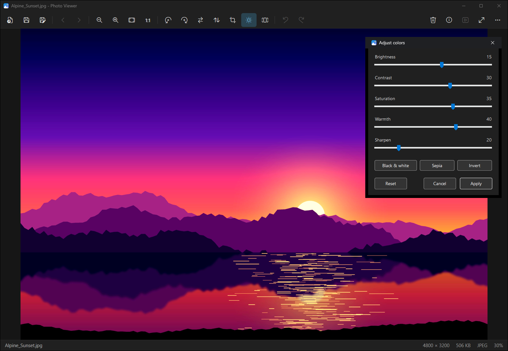
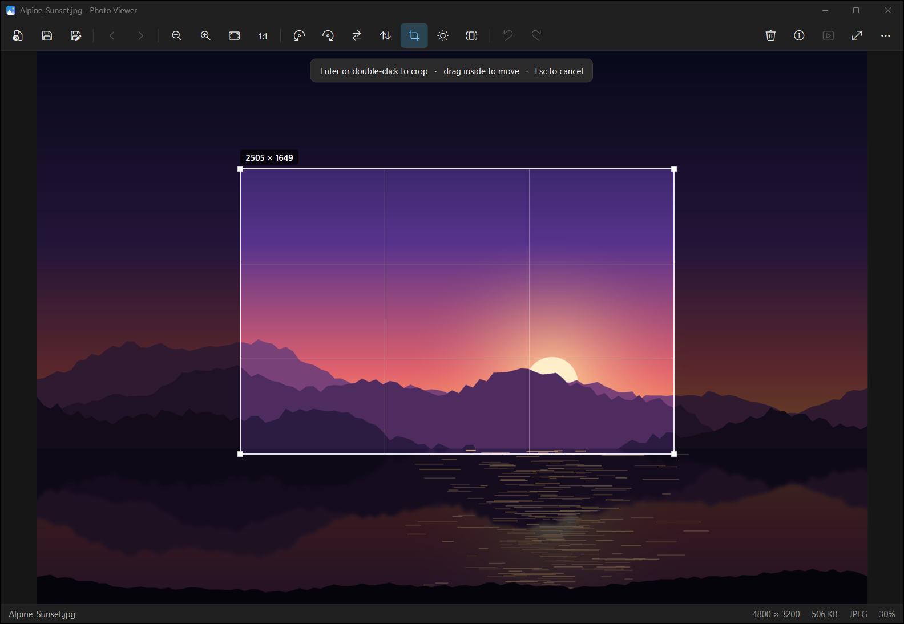

Everything a photo viewer needs.
Nothing it doesn't.
It's built in native C++ with GPU rendering, so it stays out of your way: it opens fast, scrolls smoothly and keeps memory use low.
Fast
The GPU, the decoder and the window all start up at the same time. The next and previous photos are preloaded, so browsing a folder feels instant.
Smooth zoom & pan
High-quality downscaling, a pixel-exact 100% view, wheel zoom to the cursor, and drag to pan. There's also full screen and a slideshow.
EXIF inspector
See the camera, lens, shutter, aperture, ISO and focal length at a glance. The GPS location opens in a map. Every EXIF, XMP and IPTC tag is listed and can be copied.
Quick edits
Rotate, flip, crop with thirds guides, and resize with high-quality cubic scaling. Undo and redo everything.
Color adjust
Brightness, contrast, saturation, warmth and sharpen with a live preview. Also one-click black & white, sepia and invert.
Safe saving
Re-saving a JPEG keeps its camera data and GPS. Files are written atomically, so a crash can never leave a half-written photo.
A clean, dark interface
Your photo takes center stage. The tools sit in a slim toolbar, and everything else is a right-click away.


Opens almost everything
These formats work out of the box. Highlighted ones need a free Microsoft Store extension, and Photo Viewer picks it up automatically once installed.
You can save as JPEG, PNG, BMP, TIFF, GIF, JPEG XR or HEIC.
Fully keyboard-driven
Every action has a key, and mouse back/forward buttons work too. Press F1 in the app to see this list.
| ←→ PgUpPgDn Space HomeEnd | Previous / next / first / last photo |
| Wheel +− 0 1 | Zoom, fit to window, 100% |
| F11 or double-click, F5, I | Full screen, slideshow, details & EXIF |
| RL HV C E Ctrl+R | Rotate, flip, crop, adjust colors, resize |
| Ctrl+Z Ctrl+Y | Undo, redo |
| Ctrl+O Ctrl+S Ctrl+Shift+S | Open, save, save as |
| Ctrl+C Ctrl+Shift+C Del | Copy image, copy details, move to Recycle Bin |
| Esc | Cancel crop, leave full screen, close |
Up and running in seconds
Requires Windows 10 (version 1809) or 11, 64-bit.
Microsoft Store
Recommended. Get it from Microsoft and click Install. It's signed by Microsoft, so there's no security warning, and it updates automatically.
Or go portable
Download PhotoViewer-win-x64.zip, unzip it anywhere, and run PhotoViewer.exe. Nothing gets installed.
Make it default
Optional: ⋯ → Set as default photo viewer…, then pick it in Windows Settings.
Questions
Is it really free?
Yes. There are no ads, no trial and no account.
Does it upload or track anything?
No. It works entirely offline. The only network action is the optional "Open location in map" button, which opens OpenStreetMap in your browser when you click it.
Why won't my HEIC or RAW photos open?
Windows needs the free decoder installed: HEIF Image Extensions for HEIC, AV1 Video Extension for AVIF, WebP Image Extensions, or Raw Image Extension for camera RAW. Install it from the Microsoft Store and reopen the photo.
Where are settings stored, and how do I uninstall?
Settings are stored in HKCU\Software\FastPhotoViewer. To uninstall the Store version, go to Settings → Apps → Installed apps. For the portable version, delete the folder (if you set it as default, first pick another app in Windows Settings).
Give your photos a faster home.
Get Photo Viewer free. It takes about a second to try.